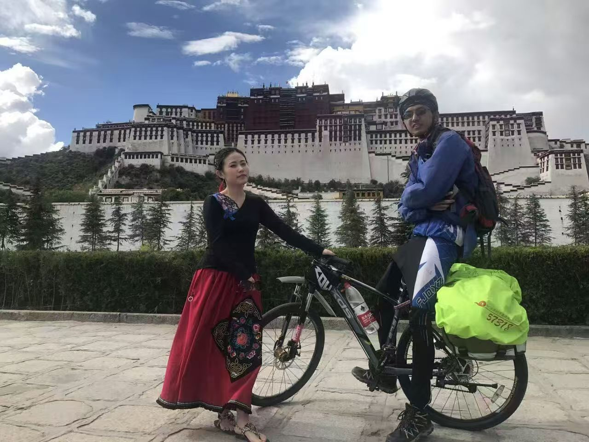
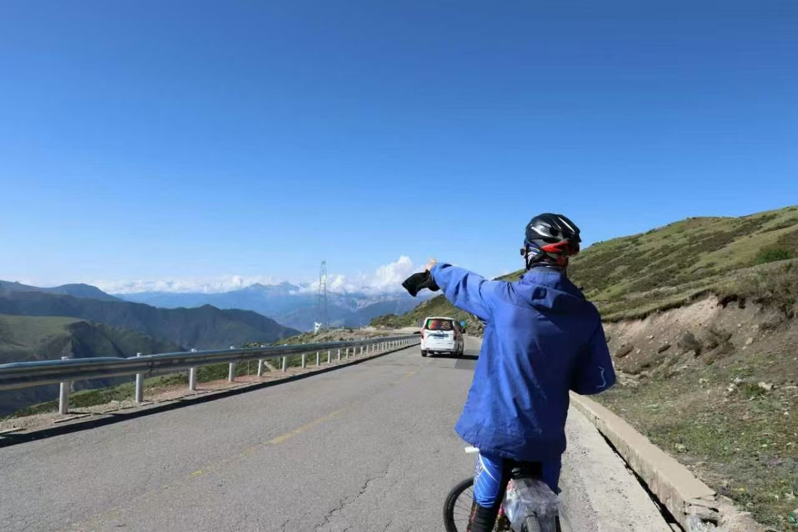
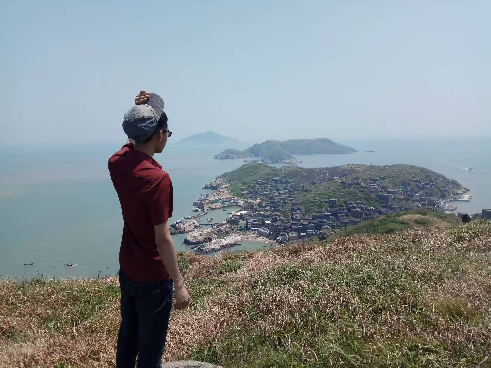
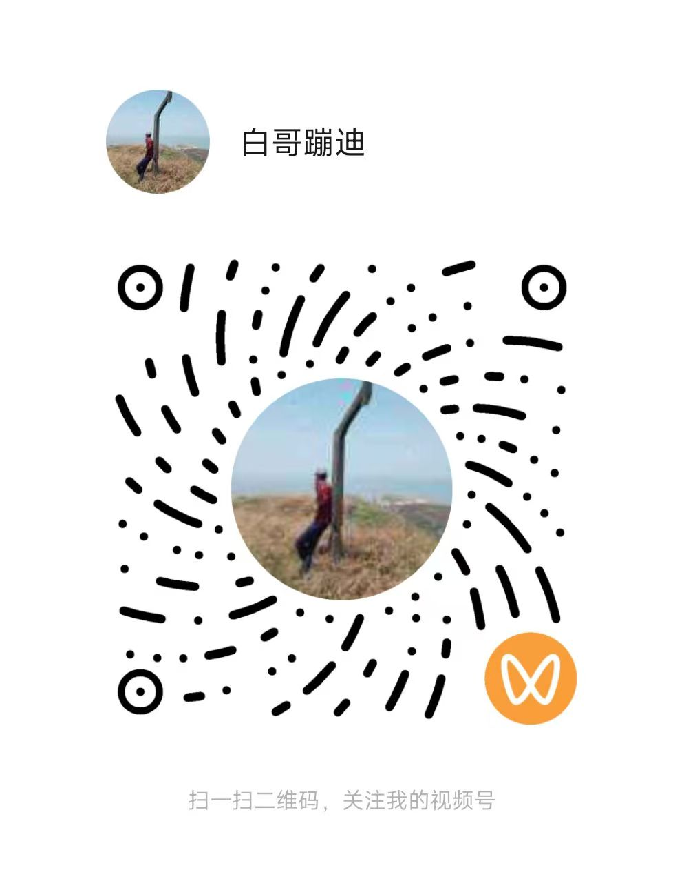
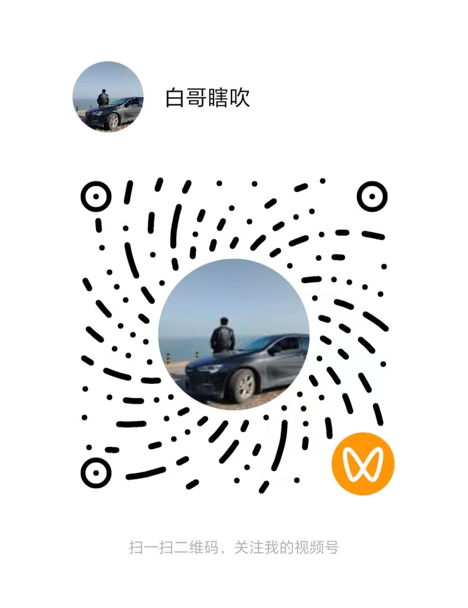

白哥聊AI
AI、产品与产业观察
04 · Beyond Work
喜欢徒步、登山、滑雪、骑行、摄影和口琴。户外让我保持对真实世界的感受，持续创作则训练我把复杂问题讲清楚。
Outdoor Journal
从高原骑行到海岛徒步，身体力行也是理解世界的一种方式。



Content Channels
扫描对应二维码，分别查看 AI 分享、户外记录、音乐内容与公众号文章。
AI、产品与产业观察

户外、骑行与旅行记录

口琴与音乐兴趣
公众号文章与长期思考
Personal Signals
长期主义不是口号，它体现在愿意出发、面对不确定、持续训练和把过程记录下来。